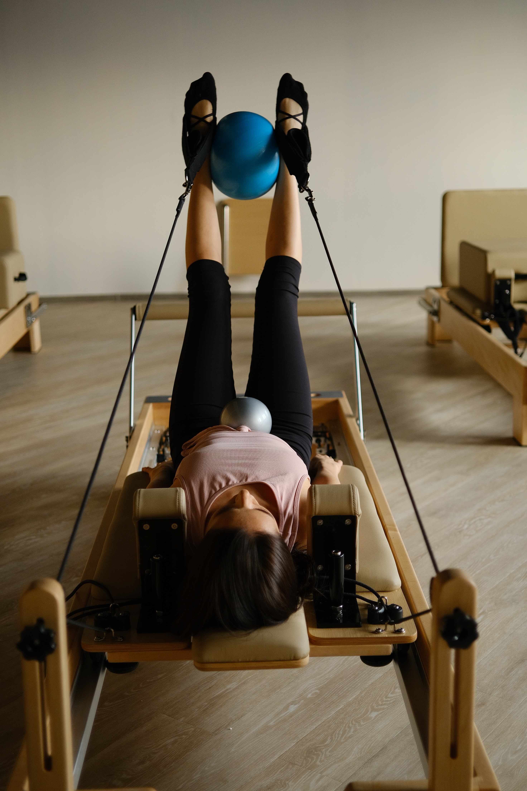

Yoga
El yoga (del sánscrito yoga ‘unión’, योग en devanagari) es una disciplina tradicional espiritual, física y mental originada en la India. El yoga es una de las seis dárshanas ortodoxas del hinduismo. Enfatiza la meditación y la liberación, siendo su texto principal el Yoga sutra. Esta palabra se asocia con prácticas de meditación en el hinduismo, el budismo y el jainismo.

Hatha Yoga
El hatha yoga es uno de los métodos de yoga más difundido en todo el mundo. Está caracterizado por una suave transición entre una posturas y gestos como las asanas, mudras, bandhas, con ejercicios respiratorios, pranayama.

Pilates
El Pilates, es un sistema de entrenamiento físico y mental creado a principios del siglo XX por Joseph Hubertus Pilates, quien lo ideó basándose en su conocimiento de distintas especialidades como gimnasia, traumatología y yoga; uniendo el dinamismo y la fuerza muscular con el control mental, la respiración y la relajación. recalca el uso de la mente para controlar el cuerpo, pero buscando el equilibrio y la unidad entre ambos. El método se centra en el desarrollo de los músculos internos para mantener el equilibrio corporal y dar estabilidad y firmeza a la columna vertebral.
Reiki
Reiki (霊気? /ˈreɪki/) es un tipo de medicina alternativa japonesa englobada dentro de las "terapias de energía". Sus practicantes utilizan la imposición de manos o el toque terapéutico para desde las palmas transferir la "energía universal", el qì, hacia el paciente con el fin de promover la curación emocional o física.

Masajes
El masaje es una forma de manipulación de las capas superficiales y profundas de los músculos del cuerpo utilizando varias técnicas, para mejorar sus funciones, ayudar en procesos de curación, disminuir la actividad refleja de los músculos, inhibir la excitabilidad motoneuronal, promover la relajación y el bienestar y como actividad recreativa. Probablemente es la herramienta terapéutica más antigua que el ser humano utilizó para proporcionarse un recurso natural contra el dolor.